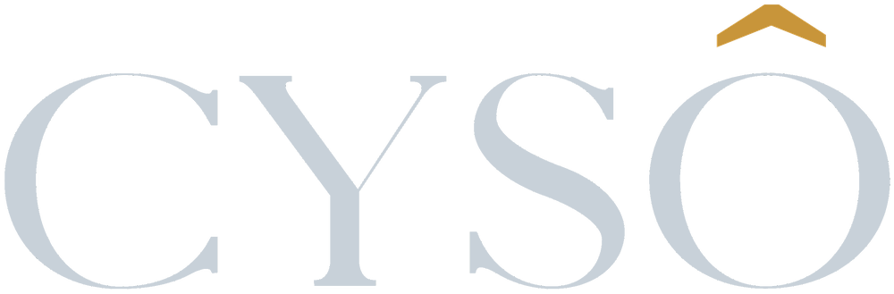

META ADS
Facebook e Instagram
Presença, desejo e conversão dentro do ecossistema onde o seu público já passa o tempo.
A CYSÔ transforma investimento em mídia em uma estrutura estratégica de aquisição de clientes — para negócios que já entendem que tráfego, sozinho, não é suficiente.
Estratégia de mídia para negócios que querem crescer com mais clareza.
A maior parte dos negócios que nos procura já testou tráfego pago antes. O problema raramente é a plataforma.
Tráfego sem estratégia vira custo. Tráfego com inteligência se torna um canal previsível de aquisição.
Quero entender meu cenárioAntes de qualquer anúncio no ar, entendemos o negócio, a oferta e a jornada do seu cliente. A campanha é onde a estratégia se torna visível — não onde ela começa.
Presença, desejo e conversão dentro do ecossistema onde o seu público já passa o tempo.
Aparecer no exato momento em que alguém decide procurar por uma solução como a sua.
Construção de demanda em formato nativo, para públicos que ainda não sabiam que precisavam de você.
Acesso direto a tomadores de decisão e públicos profissionais qualificados.
Canais, públicos, mensagens, orçamento e jornada — definidos antes de qualquer campanha ir ao ar.
Leitura contínua de resultados para transformar números em decisões, não apenas em relatórios.
Um processo estruturado para transformar investimento em mídia em crescimento consistente.
Quero aplicar esse método no meu negócioEntendemos o negócio, o mercado, o público, a oferta e o histórico de mídia — antes de qualquer decisão.
Definimos canais, públicos, mensagens, orçamento e a jornada que o cliente vai percorrer até a conversão.
Estruturamos campanhas, rastreamento e integrações com precisão técnica, prontas para gerar dados confiáveis.
Analisamos comportamento e performance para tomar decisões baseadas em dados — não em achismo.
Identificamos, de forma contínua, novas oportunidades para melhorar a aquisição do negócio.

Não queremos apenas mostrar métricas.
Queremos entender o que elas significam para o seu negócio — e agir sobre isso.
Cada mercado tem uma jornada diferente. Por isso não trabalhamos com campanhas prontas nem estratégias copiadas de outro segmento.
Marketing médico exige precisão regulatória e confiança — não apelo genérico.
Ciclos de decisão mais longos pedem relacionamento, não apenas captura.
Tickets altos exigem autoridade técnica e geração de demanda qualificada.
Presença geolocalizada e conversão direta para quem está por perto.
Desejo, recorrência e visibilidade em um mercado de decisão rápida.
Jornadas de nutrição para decisões que envolvem tempo e confiança.
Públicos profissionais, propostas de valor claras e ciclos consultivos.
Estrutura de aquisição para quem já validou o negócio e quer escalar com controle.
Com trajetória em comunicação, marketing e mídia paga, Heloisa construiu a CYSÔ a partir de uma vivência prática em um dos mercados mais exigentes para se anunciar: o marketing médico — onde não há espaço para promessas vazias, apenas para estratégia, precisão e responsabilidade sobre o que se comunica.
Essa mesma exigência guia a forma como a CYSÔ estrutura campanhas para negócios de qualquer segmento hoje: entender antes de executar, e medir antes de afirmar.
Solicite uma análise inicial da sua estratégia atual e entenda, com clareza, como a CYSÔ pode contribuir para o crescimento do seu negócio.
Preencha as informações abaixo. Nossa equipe vai analisar seu cenário e retornar pelo WhatsApp.
Prefere falar direto? Fale conosco no WhatsAppVaria conforme segmento e objetivo. Na análise gratuita indicamos uma faixa de investimento coerente com a sua realidade antes de qualquer compromisso.
Atendemos negócios de diversos segmentos — saúde, serviços, B2B, engenharia, negócios locais, alimentação, educação e empresas em crescimento. A estratégia é sempre adaptada ao seu mercado.
Sim. Estruturamos criativos, públicos e rastreamento como parte da implementação — a campanha nasce alinhada com a estratégia, não separada dela.
Sim, e também TikTok Ads e LinkedIn Ads. O canal é definido pela estratégia — onde o seu cliente realmente está — e não pelo que é mais fácil de vender.
Condições comerciais são definidas após o diagnóstico, de acordo com o escopo combinado. Conversamos sobre isso na apresentação da estratégia.
Você preenche o formulário, nosso time avalia seu contexto atual e agenda uma conversa para apresentar oportunidades de melhoria — sem custo e sem compromisso.
Os primeiros sinais de aprendizado aparecem nas primeiras semanas de veiculação. Resultados consistentes de performance costumam se firmar ao longo dos primeiros meses de otimização.